|
|
|
|
|Instituto Tecnológico de Costa Rica|Escuela de Matemática| M. Sc. Geovanni Figueroa M. |
1 2 3
4 5
6 7
8 9
10 11
12 13
14 15
16
|
|
En el modelo matemático de un sistema físico, como el de una
masa
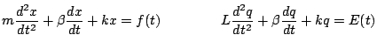
es una función que representa una fuerza externa Usaremos la transformada de Laplace en la solución de ecuaciones integrales, de sistemas de ecuaciones diferenciales y también la aplicaremos al cálculo de integrales.
En el capítulo anterior trabajamos con el operador derivación
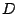, el cual es un caso particular de funciones más generales
llamadas transformaciones lineales. Ahora estudiaremos una
nueva transformación lineal que es un caso especial de una clase
de transformaciones lineales de especial interés, llamadas
transformaciones integrales. Para comprender en qué consisten,
consideremos funciones
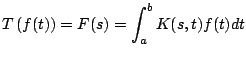
La función se llama núcleo de la transformación
Antes de dar alguna teoría que nos facilite el trabajo, vamos a calcular la transformada de Laplace de algunas funciones, usando esta definición.
Ejemplo
Solución
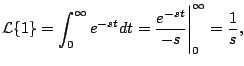
para
Ejemplo
Solución
Observación: no resulta difícil intuir a partir de estos ejemplos la siguiente transformada
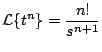
para
Ejemplo
Solución
para Un par de transformadas particularmente útiles son las de las funciones trigonométricas 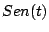 y 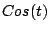, que calculamos en el siguiente ejemplo.
Ejemplo
Solución
Por otro lado
De donde concluimos que
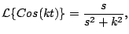
para Y retomando la transformada de 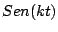
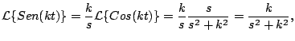
para Observación: podemos calcular la transformada usando su representación compleja. Como
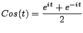
tenemos que
De forma análoga usando
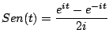
podemos calcular 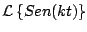.
Ejemplo
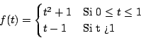
Solución
|